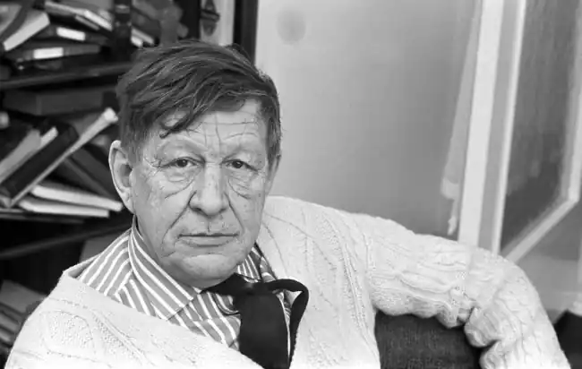

Вістен-Г'ю Оден — англо-американський поет, який народився у Великій Британії, а після Другої світової війни став громадянином США. Одена називають одним з найвидатніших поетів XX століття.
Вістен Г'ю Оден народився в Йорку, Норт-Йоркширі, 21 лютого 1907 року. Його батьком був видатний лікар, письменник і перекладач Джордж Оден. Батьки виховували хлопчика в англіканській вірі. Оден був третьою дитиною в сім'ї.
З восьми років він навчався в школі Грешама, в Норфолку. У 1918 році він познайомився з Крістофером Ішервудом, з яким товаришував все життя і разом з яким створив безліч творів. У 1922 році Оден публікує перший вірш в шкільній газеті під вигаданим ім'ям. А через два роки в періодичній пресі з'явився вірш Одена, правда, з помилкою в прізвищі автора. У 1925 Вістен Оден вступив до Оксфорда. Через п'ять років, завдяки Стівену Спендерові, Одену вдається видати збірку своїх віршів "Вірші" (1930). Протягом життя багато подорожував, жив у різних країнах. Першою була Німеччина, де він побував після закінчення університету. Пізніше відвідав Шотландію, Іспанію, Італію, Австрію, Ісландію, Китай та інші країни. Яскравою сторінкою його життя є участь у громадянській війні в Іспанії у складі санітарного батальйону армії республіканців (під впливом цих подій написав поему "Іспанія"). Письменник активно виступає проти фашизму. Переповнений прагненням особисто прилучитися до знакових подій століття, Вістен Г'ю Оден вирушає на війну до Китаю (результатом особистих спостережень стає книга нарисів "Подорож на війну"). Пізніше поет позбудеться від юнацького пафосного сприйняття історії, переконається в тому, що нічим пишатися в історії, адже "творять її убивці, що живуть у нас самих". Вістен Г'ю Оден працював викладачем, часто виступав з читанням власних творів. У 1939 р. поет переїхав до Сполучених Штатів Америки, де 1946 р. отримав американське громадянство. Одена часто звинувачували в антипатріотизмі, адже він покинув Англію на початку Другої світової війни. У 1947 р Вістен Оден удостоївся Пулітцерівської премії, в 1954 р. отримав Боллінгеновскую премію. Він написав вірші на музику Бенджаміна Брет до фільму "Вугільне обличчя". Одна з найпопулярніших робіт Одена – "Похоронний блюз", вірші використані у фільмі "Чотири весілля і похорони" (1994). Він погоджувався з тим, що причиною його еміграції був страх, пов'язаний з війною, але ніколи не розривав зв'язків з батьківщиною: читав лекції в Оксфорді (1956—1961), а перед смертю повернувся в Англію (1972). Помер Оден від серцевого нападу уві сні (29 вересня 1973 р.), коли перебував в Австрії, куди його запросили виступити з циклом публічних лекцій.